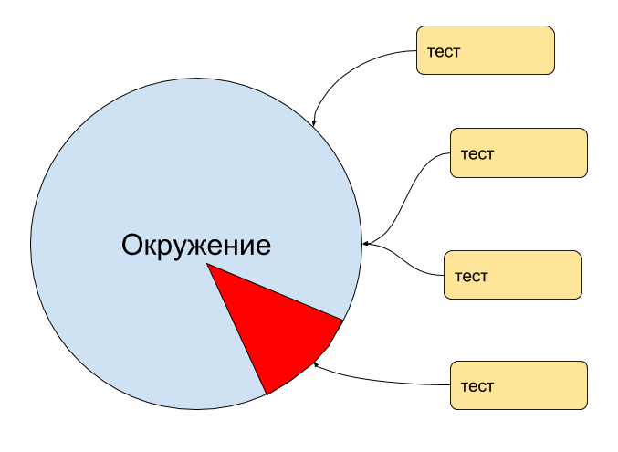
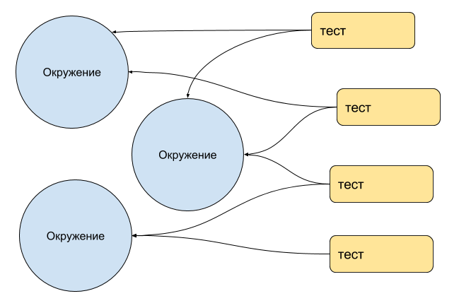

Created: 2016-06-08 Wed 17:23
@patch("some.module.foo", Mock(...)) @patch("some.module.bar", Mock(...)) @patch("some.module.baz", Mock(...)) @patch("some.module.pip", Mock(...)) class MyTest(TestCase, MyMixin, CacheMixin): ... @override_settings(VALUE=42) @patch("other.module.func", Mock(...)) def test_ok(self): self.do_stuff() ...
def setUp(self): self.entity.user_requests_count = 0 self.entity.user = {} self.bar_user_goods_by_front_mock = Mock(return_value=(True, OTHER_DATA)) self.backend_user_mock = Mock(return_value=(True, BACKEND_MOCK)) self.baz_single = Mock(return_value=(True, TEST_SINGLE)) self.storage_mock = Mock(return_value=(200, STORAGE_DATA_NEW)) self.storage_new_mock = Mock(return_value=(200, FAKE_STORAGE)) self.shop_user_stats_mock = Mock(return_value=(True, TEST_USER_STATS_RESPONSE)) self.shop_mock = Mock(return_value=(True, TEST_LIST_RESPONSE)) self.user_mock = Mock(return_value=(True, TEST_EVENTS_USER_SHOP)) self.list_mock = Mock(return_value=(True, TEST_BAZ)) self.user_goods_mock = Mock(side_effect=lambda user_id, **kwargs: (True, {'goods': []})) self.user_friends_mock = Mock(return_value=(200, [{'id': 1}, {'id': 2}, {'id': 3}])) self.current_mock = Mock(return_value=(True, TEST_SOME_DATA)) self.test_mock = Mock(return_value=(True, {})) self.price_mock = Mock(return_value=(True, {'data': [TEST_OTHER_DATA]})) self.foo_mock = Mock(return_value=(400, None)) self.some_mock = Mock(return_value=(400, None)) self.user_money_mock = Mock(return_value=(200, TEST_USER_MONEY)) self.foo_some_mock = Mock(return_value=(True, TEST_USER_GOODS)) self.foo_some_goods_mock = Mock(return_value=(True, TEST_USER_GOODS_RESPONSE))
test = predicate(Environment)

test = predicate(env1, env2, ... , envN)

test_ok = predicate(env1, env2) test_failture = predicate(env1) test_high_price = predicate(env1, env2, env3)
def test_ok(fixture1, fixture2): ... f1 = fixture1() f2 = fixture1() test_ok(f1, f2) del f1 del f2
def test_buy(user, goods, cache, auth) def test_auth_failture(user, auth)
app = Flask(__name__) @app.route("/user/auth") def endpoint_auth(requrest): return jsonify({ 'user': {'name': 'User Name', 'status': 'active'} }) @pytest.yield_fixture(scope="session") def fix_auth(): from multiprocess import Process p = Process(app.run, "127.0.0.1", 9001, True) p.start() yield app p.terminate()
@pytest.yield_fixture(scope="functions") def fix_avatar(): path = "~/some/path/avatar.png" avatar = PIL.Image(path) yield avatar os.unlink(path)
@pytest.fixture(scope='function') def cache(request): _cache = django_cache _cache.clear() request.addfinalizer(_cache.clear) return _cache
@pytest.fixture(scope="function", params=[(1, 1), (128, 1), (5000, 5000)]) def fix_avatar((w, h)): path = "~/some/path/avatar.png" avatar = PIL.Image(path, (w, h)) ...